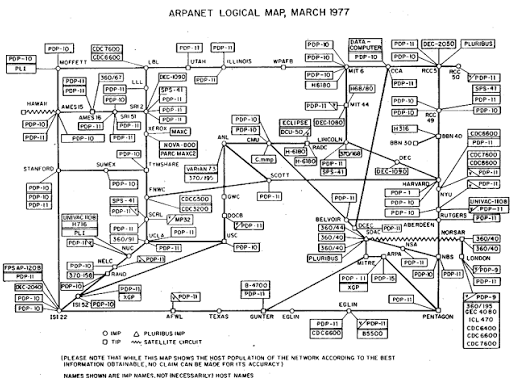

The History Of The Internet
On this page lies everything about the history of the internet!
The original idea of an early vision of interconnected computers was proposed by a scientist named J.C.R. Licklider in 1962. This idea helped influence the development of ARPANET (Advanced Research Projects Agency Network). ARPANET began operating in 1969. ARPANET was created to help universities and research facilities share information and computer resources. 4 computers were connected to this network by the end of 1969
The World Wide Web was invented by Tim Berners-Lee in 1989 as he worked at CERN. The World Wide Web allowed people to access websites and linked information through web browsers, unlike the internet itself. One of the earlies recorded purposes using the world wide web was a music album CD of Ten Summoner's Tales in August 1994. However there are people that claim that this isn't true.

This is the ARPANET map, it shows which computers were connected to it back then.